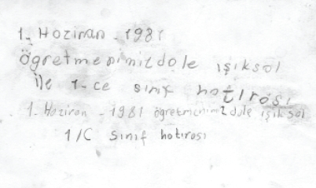

Fotoğrafın arkasına düştüğüm not
Kendimi bildiğim zamandan ergenliğim başlayıncaya kadar bu sokakta yaşadım. Okuluma orada başladım. Kuran kursuna orada gittim. Karateye orada ilgi duydum. Hüseyin sayesinde bağlamaya merak sardım. Arabalara merakım ise Caner yüzünden oldu. Semih Abi’ye medeni cesaretinden, Salih Abi’ye yakışıklılığından dolayı hayrandım. İlkokul arkadaşım Şebnem yakınımızda oturuyor diye mutlu, Almanya’dan gelen Bike iyi ki bizim sınıfa düşmüş diye sevinçten deli oluyordum. Soner gibi ekmeğimi bölüştüğüm bir arkadaşımın olması ne kadar da güzeldi.
Ortaokula başladığımda ilkokula gidenleri, liseye başladığımda ortaokul öğrencilerini küçük görmeyi orada öğrendim. İlk kavgamı orada yaptım. İlk aşkımı, hayal kırıklığımı, sevincimi, üzüntümü hep orada yaşadım. Arkadaşımın annesi, hepimizin ikinci annesi Naciye Teyze’yi orda kaybettim.